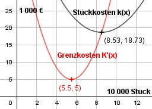
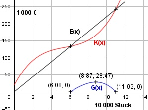

Aufgabe 85 Die Kostenfunktion K(x) = 0,5x3 - 8,25x2 + 50,375x + 20 gibt die Kosten in 1000 € an, die für x Einheiten zu je 10 000 Stück bei der Herstellung anfallen. a) Bei welcher Produktionsmenge sind die Stückkosten am niedrigsten? b) Bei welcher sind die Grenzkosten am niedrigsten? c) Für welche Produktionsmenge ist bei einem Stückpreis von 2,20 € der Ertrag positiv? d) Für welche Produktionsmenge ist bei einem Stückpreis von 2,20 € der Ertrag am größten? a) K(x) 0,5x3 - 8,25x2 + 50,375x + 20 k(x) = ----- = ------------------------------- x x 20 k(x) = 0,5x2 - 8,25x + 50,375 + ---- x 20 k'(x) = x - 8,25 - ---- x2 40 k''(x) = 1 + ---- immer > 0 für x > 0 x3 20 x - 8,25 - ---- = 0 | *x2 x2 x3 - 8,25x2 - 20 = 0 Newtonsches Näherungsverfahren: Wertetabelle: x 6 7 8 9 k'(x) -101,25 -81,25 -36 40,75 Vorzeichenwechsel zwischen 8 und 9, gewählt x01 = 8,5 20 0,5*8,52 - 8,25*8,5 + 50,375 + ----- 8,5 x1 = 8,5 - -------------------------------------- 20 8,5 - 8,25 - ------ 8,52 x1 = 8,5 - (-0,03) = 8,53 k''(8,53) > 0 --> Tiefpunkt (8,53|18,73) 18,73 steht für 18,73 * 1 000 = 18 730 € /10 000 Stück --> Stückkosten = 1,873 €. Bei einer Produktionsmenge x = 8,53, entspricht 8,53 * 10 000 = 85 300 Stück, sind die Stück- kosten am niedrigsten und betragen 1,873 €. b) Grenzkosten entsprechen K'(x). K'(x) = 1,5x2 - 16,5x + 50,375 K''(x) = 3x - 16,5 3x - 16,5 = 0 | +16.5 3x = 16,5 | :3 x = 5,5, K'(5,5) = 1,5 * 5,52 - 16,5 * 5,5 + 50,375 = 5 K'''(x) = 3 > 0 --> Tiefpunkt (5,5|5) Bei einer Produktionsmenge von 5,5 * 10 000 = 55 000 Stück sind die Grenzkosten am niedrigsten.

c) 10 000 Stück kosten 2,2 €/Stück * 10 000 Stück = 22 000 € Eine Einheit von 1 000 kostet 22 000 €/1 000 = 22 €/Einheit = Erlös E(x) Der Ertrag ist zwischen Gewinnschwelle und Gewinngrenze positiv. G(x) = 22x - (0,5x3 - 8,25x2 + 50,375x + 20) G(x) = - 0,5x3 + 8,25x2 - 28,375x - 20 Newtonsches Näherungsverfahren: Wertetabelle: x 5 6 7 8 9 G(x) -18,125 -1,25 14,125 25 28,375 x 10 11 12 G(x) 21,25 0,625 -36,5 Vorzeichenwechsel zwischen 6 und 7 --> gewählt x01 = 6 Vorzeichenwechsel zwischen 11 und 12 --> gewählt x02 = 11 Newton Näherungsverfahren: -0,5 * 63 + 8,25 * 62 - 28,375 * 6 - 20 x1 = 6 - ----------------------------------------- -1,5 * 62 + 16,5 * 6 - 28,375 x1 = 6 - (-0,08) = 6,08 -0,5*113 + 8,25*112 - 28,375*11 - 20 x2 = 11 - -------------------------------------- -1,5 * 112 + 16,5 * 11 - 28,375 x2 = 11 - (-0,02) = 11,02 Der Ertrag ist zwischen einer Produktionsmenge von 6,08 und 11,02 positiv. d) G'(x) =- 1,5x2 + 16,5x - 28,375 G''(x) = - 3x + 16,5 -1,5x2 + 16,5x - 28,375 = 0 A, B, C - Formel: A = -1,5, B = 16,5, C = -28,375 x1,2 = x1,2 = x1,2 = -16,5 ± 10,1 x1,2 = --------------- -3 x1 = 8,87 G(8,87) = - 0,5 * 8,873 + 8,25 * 8,87 - - 28,375 * 8,87 - 20 = 28,47 x2 = 2,13 G(2,13) = - 0,5 * 2,133 + 8,25 * 2,132 - - 28,375 * 2,13 - 20 = - 47,8 --> Verlust G''(8,87) = - 3 * 8,87 + 16,5 < 0 --> Hochpunkt (8,87|28,47) Bei einer Produktionsmenge von 8,87 * 10 000 = 88 700 Stück ist der Ertrag am größten.